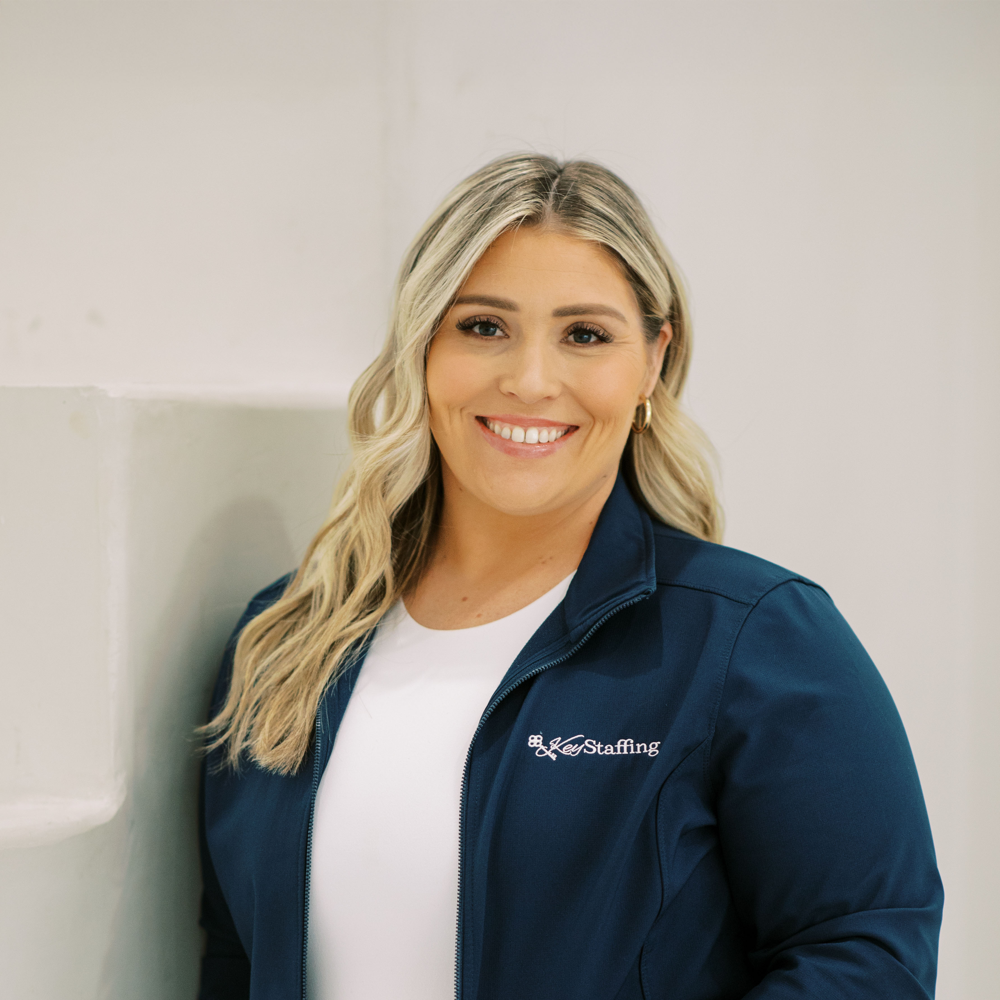

Orders staying open too long
Employers
If your workforce feels unpredictable, expensive, or constantly starting over, there is a reason.
We help manufacturing, logistics, and industrial companies fix workforce issues at the root, not just fill positions. Key Staffing brings consulting and execution together so the process holds up after the hire.
Turnover hitting production
Markup questions with no clear answers
Managers reacting instead of planning
Why Staffing Feels Broken
Most staffing pain is a systems issue wearing a recruiting label.
Employers usually come in frustrated with turnover, markup confusion, or bad matches. Those are real problems, but they usually point to deeper breakdowns in intake, expectations, process, and accountability.
High Turnover
When the role is unstable, the workforce becomes unstable.
Pay, shift reality, leadership habits, onboarding gaps, and unclear expectations all show up as turnover.
Markup Confusion
Cheap staffing usually hides expensive downstream issues.
What looks cheaper up front often costs more in retraining, downtime, missed production, and churn.
Bad Matches
Resume volume is not the same thing as workforce fit.
When intake is rushed or expectations are muddy, even good candidates land in the wrong environment.
Resume Dumping
Recruiters can send activity. Operators need solutions.
Key Staffing is designed to bring context, process, and execution, not just a stack of names.
Services
What Key Staffing does for clients now.
Staffing
Stabilize Your Workforce
Temporary, temp-to-hire, onsite, and workforce support designed to reduce chaos instead of feeding it.
Recruiting
Hire the Right People the First Time
Direct hire and search work with deeper intake, better alignment, and stronger candidate filtering.
RPO
Fully Outsource Your Hiring (without losing control)
Embedded recruiting support, reporting, and process structure without sacrificing visibility or standards.
HR Consulting
Fix compliance, structure, and people issues
Get support on policy, compliance, org structure, training, and recurring employee friction points.
Leadership Development
Turn supervisors into actual leaders
Build frontline leadership that can keep expectations clear, teams aligned, and turnover lower.
Recent Results
This is why clients keep seeing the value in the investment.
Stevens Transportation and PSS
Positions filled within 30 days with a process built to move from intake to execution quickly.
HM turnaround
Filled in 60 days what had gone unfilled for 8 months before Key Staffing stepped in.
Safety hires under 30 days
Two safety roles moved from intake to start in less than 30 days.
White-glove reputation
Clients consistently cite communication, professionalism, adaptability, and accountability.
Client Testimonials
What partners are already saying.
Pulled from current client survey responses, with more testimonials ready to rotate in as new feedback comes in.
"Their team takes the time to understand our business needs, culture, and expectations."
9/10"Key Staffing helped us fill vital roles in 2025. Their communication is top notch."
10/10"Our relationship and experience with Key Staffing has exceeded our expectations."
10/10"The customer service I receive from Key Staffing is excellent."
10/10What Makes KSC Different
You do not just send people. You build systems.
Key Staffing stands out because the team is built around education, certifications, training, and a true consultative approach. The work does not stop at recruiting. It reaches into communication, management, structure, and long-term workforce planning.
Why Clients Stay
You are paying for a team that diagnoses, communicates, and protects the operation, not a firm that disappears after sending resumes.
That difference shows up in response time, candidate quality, leadership conversations, and whether the fix actually lasts.
Transparent about the industry
We explain the mechanics, the markups, the misses, and the expectations instead of hiding behind jargon.
Process from top to bottom
In-house training, consistent education, disciplined intake, and repeatable standards across the team.
Consulting plus execution
It is not enough to know what is wrong. The difference is implementing a better way to hire and keep people.
Premium on purpose
The value is not in being the cheapest. It is in being the team that reduces bigger workforce costs.
Leadership Team
The people behind the process.

Founder & CEO
Jackie Koster
Leads Key Staffing with a consultant-operator lens shaped by years of staffing, HR, and onsite program leadership.
Regional Manager
Jasmin Bejar
Known by clients for fast response time, professionalism, strong follow-through, and quality placements that hold up.

Market Expansion Manager
Cristian Sanchez
Helps bring the Key Staffing process to new client relationships with speed, consistency, and a high standard of care.
Next Step